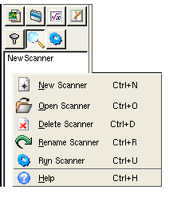
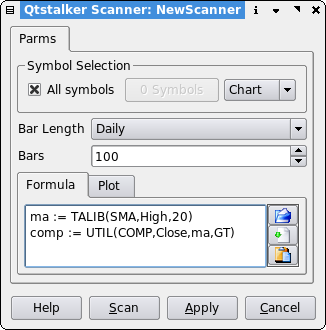

Scanner Panel
Description
The scanner tab allows you scan symbols using a user defined formula. All the symbols that meet the criteria of the scan are put into chart group. After the scan you might think something goes wrong, nope. The chart group will use the same name as the scan name, and be located as a folder under the "Scanner" group.

- New Scanner
- Here you can create a new scanner. Selecting this will bring up a series of dialogs. First you are asked for a name to call your new scanner. The name must be unique, if not an error message will display. After that, the scanner dialog will appear.
- Open Scanner
- This will load and display the selected scanner in the scanner dialog.
- Delete Scanner
- Deletes the selected scanner.
- Rename Scanner
- This brings up a dialog that allows you to enter the new name of the selected scanner.
- Run Scanner
- Allows the user to select a list of scanners to run in sequence.
Scanner Dialog
- Symbol Selection
- Checking the "All symbols" box will choose all symbols in the qtstalker database for scanning. Pressing the symbols button will bring up a file selector dialog that allows you to select the symbols of your desire. Use the Chart/Group selector to choose either charts or groups.
- Bar Length
- The bar length to use when scanning symbols.
- Bars
- The amount of bars to load for each symbol. Make sure you choose a number that will accomodate the bars required for the scanner formula. ie. a 200 MA will need at least 200 bars.
- Formula/Plot Tab
- This is where the user must enter a CUS type of formula to use for
the scanning logic.
See the CUS indicator plugin for details on how to construct a formula.
Note: In order for any scanner formula to work, you must have a boolean array variable plotted in order to generate the scan logic. The plotted variable is the one that qtstalker uses for selecting symbols. A FALSE value will ignore the symbol and a TRUE value will select the symbol. - Scan button
- ...will perform the scan.
- Apply button
- ...will save the scan rule.
Once all the parameters are entered, the user presses the Scan button to perform the scan. A progress dialog will then display the progress of the scan. The scan can be aborted by pressing the Cancel button from the progress dialog.